ภาพรวมการทำงาน
ใช้บันทึกการส่งคืนสินค้าให้ Supplier และการขอลดหนี้ (ลดราคา) จากสินค้าที่รับเข้าจาก PO แล้ว เอกสารต้องผ่านการรับทราบ ตรวจสอบ 2 คน และอนุมัติ ก่อนระบบจะส่งรายการไปให้คลังเบิก หักยอดรับของ PO หรือปรับต้นทุน Lot
ผู้ที่เกี่ยวข้องและสิทธิ์ที่ต้องมี
| ผู้ใช้ | สิทธิ์เมนู (กำหนดในหน้ากำหนดสิทธิ์การใช้งาน) | ทำอะไรได้ |
|---|---|---|
| ผู้ทำเอกสาร | ส่งคืนสินค้า/ลดหนี้ Supplier | สร้าง แก้ไข พิมพ์ ติดตามเอกสาร และส่งข้อความตามงานทาง LINE |
| ผู้รับทราบ | รับทราบเอกสารส่งคืนสินค้า Supplier | รับทราบ / ส่งกลับแก้ไข |
| ผู้ตรวจสอบ | ตรวจสอบเอกสารส่งคืนสินค้า Supplier | ตรวจสอบ 1 หรือ 2 / ส่งกลับแก้ไข |
| ผู้อนุมัติ | อนุมัติเอกสารส่งคืนสินค้า Supplier | อนุมัติ / ส่งกลับแก้ไข |
| ผู้ยกเลิกเอกสาร | ยกเลิกเอกสารส่งคืนสินค้า Supplier (สิทธิ์) | ยกเลิกเอกสาร (ปุ่มยกเลิกเห็นเฉพาะผู้มีสิทธิ์นี้) |
| ผู้จัดการสาเหตุ | จัดการสาเหตุการส่งคืนสินค้า Supplier (สิทธิ์) | เพิ่ม / แก้ไข / ปิดใช้งาน / เรียงลำดับ สาเหตุการคืน |
1 คนสามารถมีหลายสิทธิ์ได้ (เช่น เป็นทั้งผู้ทำเอกสารและผู้รับทราบ) ยกเว้นกรณ๊เดียวคือ ตรวจสอบ 1 กับตรวจสอบ 2 ต้องเป็นคนละคน และทุกคนเห็นเฉพาะเอกสารของบริษัทที่ตัวเองมีสิทธิ์
ประเภทการคืน: เลือกให้ถูกกับงาน
ประเภทการคืนกำหนดว่าเมื่ออนุมัติแล้วระบบจะทำอะไร และชื่อเอกสารที่พิมพ์ออกมา
| ประเภท | ใช้เมื่อ | ของออกจากคลัง | ยอดรับของ PO | ลดหนี้ / ต้นทุน Lot | ชื่อเอกสาร |
|---|---|---|---|---|---|
| ส่งคืน - รับสินค้าทดแทน | สินค้าชำรุด / ไม่ผ่านคุณภาพ คืนแล้ว Supplier ส่งของใหม่มาแทน | ✔ ส่งไปรอเบิก | ✔ คืนยอด → PO กลับไปรอรับสินค้าทดแทน | — | ใบส่งคืนสินค้า |
| ส่งคืน - ลดหนี้ (ไม่รับทดแทน) | คืนของ แล้วรับเงินคืน / ขอลดหนี้ ไม่รับของใหม่ | ✔ ส่งไปรอเบิก | — | ✔ บันทึกยอดลดหนี้ + ปรับต้นทุน | ใบส่งคืนสินค้า/ใบขอลดหนี้ |
| ไม่ส่งคืน - ลดหนี้ | ไม่คืนของ ตกลงลดราคากับ Supplier (เลือก Lot ที่หมดแล้วได้) | — | — | ✔ บันทึกยอดลดหนี้ + ปรับต้นทุน | ใบขอลดหนี้ |
เข้าสู่เมนูและหน้ารายการ
เปิดเมนู คลังวัสดุและสินค้า › ส่งคืนสินค้า/ลดหนี้ Supplier › ส่งคืนสินค้า/ลดหนี้ จากแถบเมนูด้านซ้าย หรือการ์ดในหน้า Home (กด Ctrl + K เพื่อค้นหาเมนู)
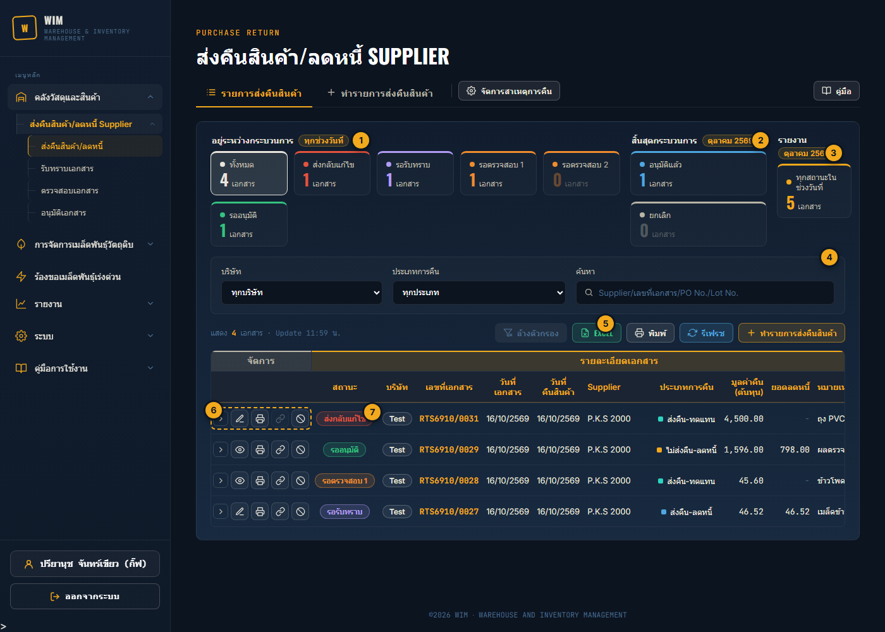
- 1อยู่ระหว่างกระบวนการ (ทุกช่วงวันที่): เอกสารที่ยังไม่จบทุกใบ ไม่ว่าทำไว้วันไหน — ทั้งหมด / ส่งกลับแก้ไข / รอรับทราบ / รอตรวจสอบ 1 / รอตรวจสอบ 2 / รออนุมัติ กดการ์ดเพื่อกรองตาราง เปิดหน้ามาจะเลือก "ทั้งหมด" ไว้ให้
- 2สิ้นสุดกระบวนการ: อนุมัติแล้ว / ยกเลิก นับตามช่วงวันที่ที่เลือก เมื่อกดการ์ดกลุ่มนี้ ตัวกรองวันที่ (ช่วงวันที่ / เดือน / ปี) จะขึ้นมาให้เลือก
- 3รายงาน: ทุกสถานะในช่วงวันที่ ใช้ส่งออก Excel หรือพิมพ์รายงานประจำเดือน
- 4ตัวกรอง: บริษัท / ประเภทการคืน / ค้นหา (Supplier, เลขที่เอกสาร, PO, Lot No., เลขที่รับ, เลขที่ใบส่งของ, ชื่อสินค้า)
- 5ล้างตัวกรอง / Excel / พิมพ์ / รีเฟรช / ทำรายการส่งคืนสินค้า: Excel และพิมพ์รายงานดึงตามการ์ดและตัวกรองที่เลือกอยู่
- 6จัดการ (เรียงจากซ้าย): ขยายดูรายการสินค้า › เปิด (✎ แก้ไขได้ / 👁 ดูอย่างเดียว) › พิมพ์ใบเอกสาร › 🔗 ติดตามเอกสาร / ส่งข้อความตาม (หัวข้อ 08) › ⊘ ยกเลิก ปุ่มที่ใช้ไม่ได้กับเอกสารนั้นจะเป็นสีเทา (ชี้เมาส์ดูเหตุผล)
- 7สถานะ ของเอกสาร — ดูความหมายใน หัวข้อ 15
- 8ขั้นตอนอนุมัติ: จุด 4 ขั้น (รับทราบ / ตรวจ 1 / ตรวจ 2 / อนุมัติ) จุดเขียว = ผ่านแล้ว วงส้ม = รอขั้นนี้ ชี้เมาส์ดูชื่อผู้กดและเวลา
สร้างเอกสาร: ข้อมูลเอกสาร
กดแท็บ ＋ ทำรายการส่งคืนสินค้า (หรือปุ่มเดียวกันในหน้ารายการ) แล้วกรอกส่วน "ข้อมูลเอกสาร" ช่องที่มี * ต้องกรอก
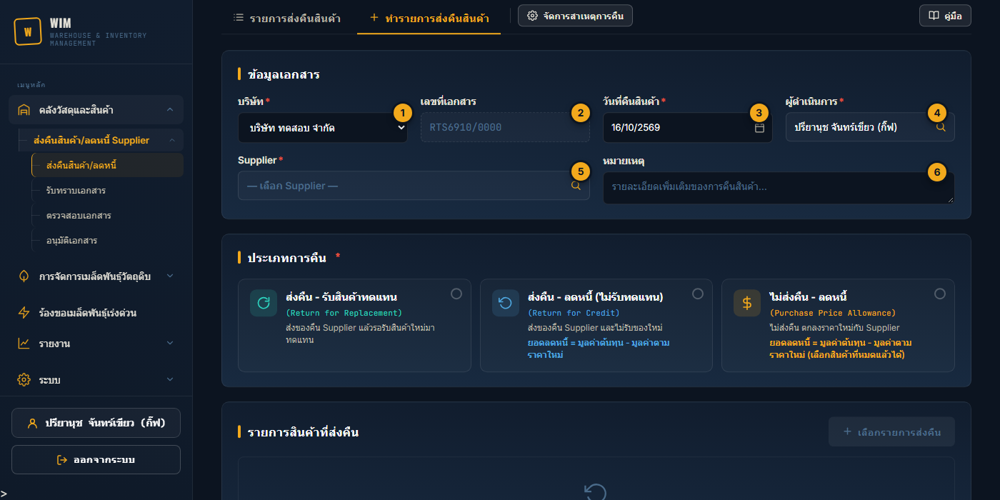
- 1บริษัท: ค่าเริ่มต้นคือบริษัทของผู้ login บันทึกแล้วเปลี่ยนไม่ได้ ถ้าเปลี่ยนก่อนบันทึก Supplier และรายการที่เลือกไว้จะถูกล้าง
- 2เลขที่เอกสาร: รูปแบบ
RTS+ ปี พ.ศ. 2 หลัก + เดือน +/+ เลขลำดับ 4 หลัก เช่นRTS6910/0027ก่อนบันทึกจะแสดง0000ไว้ก่อน เลขจริงออกตอนบันทึก นับแยกตามบริษัทและเริ่มใหม่ทุกเดือน - 3วันที่คืนสินค้า (ประเภทไม่ส่งคืน-ลดหนี้ = วันที่ขอลดหนี้): ค่าเริ่มต้นคือวันนี้
- 4ผู้ดำเนินการ: ผู้ที่ทำการคืนสินค้าจริง ค่าเริ่มต้นคือผู้ login คลิกเพื่อค้นหาชื่อพนักงานคนอื่นได้
- 5Supplier: คลิกแล้วพิมพ์ค้นหา แสดงเฉพาะ Supplier ที่บริษัทนี้มีการรับสินค้าเข้าคลังจาก PO แล้ว บันทึกแล้วเปลี่ยนไม่ได้ (ถ้าเลือกผิดให้ยกเลิกเอกสารแล้วทำใหม่)
- 6หมายเหตุ: รายละเอียดเพิ่มเติม เช่น ผลตรวจคุณภาพ ข้อตกลงกับ Supplier ข้อความนี้แสดงในใบเอกสารที่พิมพ์
สร้างเอกสาร: เลือกประเภทการคืน
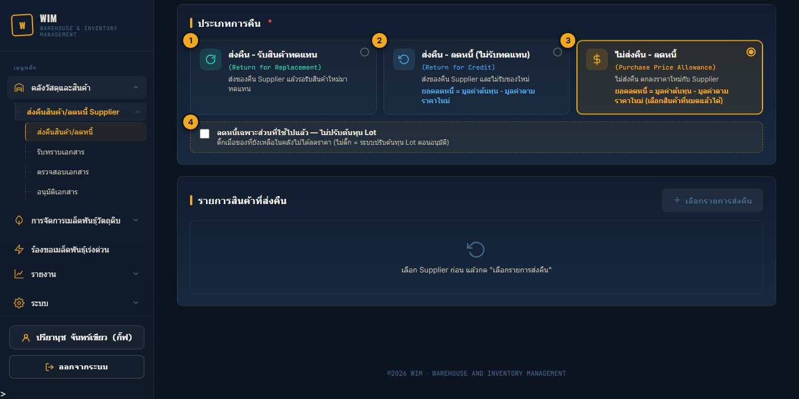
- 1ส่งคืน - รับสินค้าทดแทน: เลือกได้เฉพาะ Lot ที่ยังมีสต๊อก
- 2ส่งคืน - ลดหนี้ (ไม่รับทดแทน): เลือกได้เฉพาะ Lot ที่ยังมีสต๊อก ตารางรายการจะมีช่องราคาใหม่และยอดลดหนี้เพิ่ม
- 3ไม่ส่งคืน - ลดหนี้: เลือก Lot ที่หมดแล้วได้ด้วย (ลดราคาของที่ใช้/ขายไปแล้ว)
- 4ลดหนี้เฉพาะส่วนที่ใช้ไปแล้ว — ไม่ปรับต้นทุน Lot (เฉพาะไม่ส่งคืน-ลดหนี้): ติ๊กเมื่อ Supplier ลดราคาให้เฉพาะของที่ใช้ไปแล้ว ส่วนของที่ยังเหลือในคลังยังเป็นราคาเดิม ระบบจะบันทึกยอดลดหนี้แต่ไม่เปลี่ยนต้นทุนของ Lot (ไม่ติ๊ก = ระบบปรับต้นทุน Lot ตอนอนุมัติ — หัวข้อ 11)
สร้างเอกสาร: เลือกรายการส่งคืน
เลือก Supplier และประเภทการคืนก่อน แล้วกด ＋ เลือกรายการส่งคืน popup จะแสดงรายการจาก PO ที่รับเข้าคลังแล้วของ Supplier นั้น (แยกตาม Lot และคลัง)
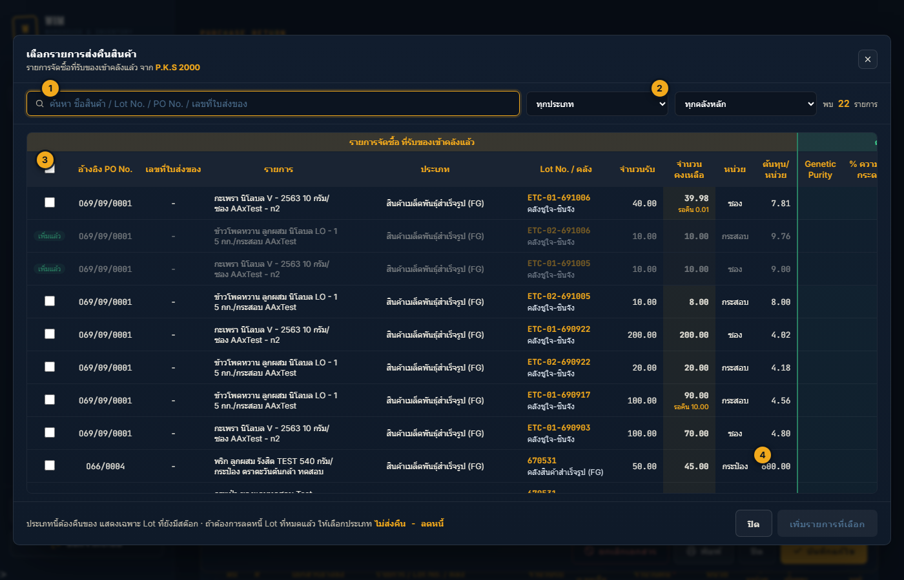
- 1ค้นหา: ชื่อสินค้า / Lot No. / PO No. / เลขที่ใบส่งของ
- 2กรองประเภทสินค้า / คลังหลัก
- 3ติ๊กเลือกทีละรายการ หรือช่องบนสุดเพื่อเลือกทั้งหมดที่แสดงอยู่ รายการที่อยู่ในเอกสารแล้วจะขึ้นว่า "เพิ่มแล้ว"
- 4เพิ่มรายการที่เลือก: รายการจะถูกเพิ่มลงตาราง เรียงตามลำดับที่ติ๊กเลือก
- จำนวนคงเหลือ หักยอดที่จองไว้ในเอกสารส่งคืนอื่นที่ยังไม่อนุมัติแล้ว (แสดง "รอคืน" สีส้มใต้ตัวเลข)
- ประเภทไม่ส่งคืน-ลดหนี้ จะมีสวิตช์ "แสดงสินค้าที่หมดแล้ว" — Lot ที่หมดแล้วต้องพิมพ์ค้นหา (อย่างน้อย 2 ตัวอักษร)
- ด้านขวาของตารางมีผลคุณภาพเมล็ดพันธุ์ของ Lot (Genetic Purity / AA-Test / ความงอกกระดาษ / ความงอก Media) เลื่อนตารางไปทางขวาเพื่อดู
สร้างเอกสาร: กรอกจำนวน ราคาใหม่ สาเหตุ และบันทึก
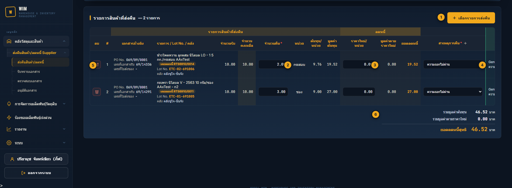
- 1เลือกรายการส่งคืน: เพิ่มรายการได้อีก
- 2จำนวนคืน / จำนวนลดหนี้: ต้องมากกว่า 0 และไม่เกินจำนวนที่ใช้ได้ (ช่องจะเป็นกรอบแดงพร้อมข้อความถ้าเกิน)
- ประเภทส่งคืนของ: ไม่เกินจำนวนคงเหลือ
- ไม่ส่งคืน-ลดหนี้: ไม่เกินจำนวนรับเข้า หักส่วนที่ส่งคืน/ลดหนี้ไปแล้วในเอกสารอื่น (กันลดหนี้ซ้ำ)
- 3ราคาใหม่/หน่วย (เฉพาะประเภทที่มีลดหนี้): ราคาที่ตกลงกับ Supplier ระบบคำนวณมูลค่าตามราคาใหม่และยอดลดหนี้ให้ทันที
- 4สาเหตุการคืน: ต้องเลือกจากรายการ (ใช้ทำรายงานวิเคราะห์) ถ้าไม่มีสาเหตุที่ต้องการ ให้ผู้มีสิทธิ์เพิ่มสาเหตุ — หัวข้อ 14
- 5ลบ รายการที่เลือกผิด
- 6ยอดรวมเอกสาร: รวมมูลค่าต้นทุน (และยอดลดหนี้สุทธิสำหรับประเภทที่มีลดหนี้)
กรอกครบแล้วกดปุ่มที่แถบด้านล่างจอ: เอกสารใหม่ = บันทึก / เอกสารเดิม = บันทึกแก้ไข
- ป้าย "ไม่มีต้นทุน" สีแดง = Lot ยังไม่มีต้นทุนต่อหน่วย เลือกได้แต่บันทึกไม่ได้ ต้องกลับไปอัพเดตต้นทุน Lot ก่อน
- ป้าย "เคยลดหนี้ RTS…" สีส้ม = ต้นทุนของ Lot นี้เคยถูกปรับจากการลดหนี้มาแล้ว ชี้เมาส์ดูต้นทุนก่อน → หลัง ตรวจราคาใหม่อีกครั้งก่อนบันทึก
- ตอนบันทึก ระบบตรวจยอดคงเหลือล่าสุดอีกครั้ง ถ้ายอดเปลี่ยน (มีคนเบิก/คืนไปก่อน) จะยังไม่บันทึก แต่ไฮไลต์รายการที่ยอดเปลี่ยนให้ตรวจจำนวนแล้วกดบันทึกใหม่
- บันทึกสำเร็จ เอกสารจะอยู่สถานะ รอรับทราบ และยังแก้ไขได้จนกว่าจะมีการรับทราบ (เปลี่ยนบริษัท / Supplier ไม่ได้)
- ประเภทส่งคืนของ ระบบจองสต๊อกไว้ทันทีที่บันทึก (เป็นรายการรอเบิกที่ยังล็อกอยู่ คลังยังเบิกไม่ได้จนกว่าจะอนุมัติ)
ติดตามเอกสาร และส่งข้อความตามงานทาง LINE
ที่หน้ารายการ กดไอคอน 🔗 ในคอลัมน์จัดการของเอกสารที่ยังอยู่ระหว่างกระบวนการ จะเปิด popup ติดตามเอกสาร
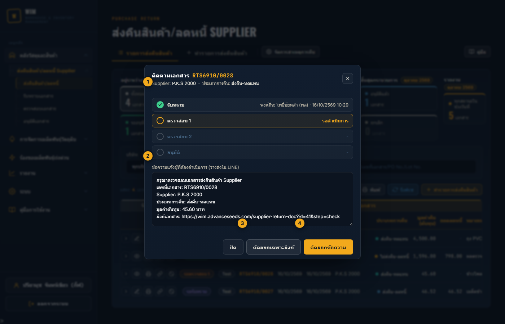
- 1ขั้นตอนทั้งหมด: ขั้นที่ผ่านแล้วบอกชื่อผู้กดและเวลา ขั้นที่รออยู่ไฮไลต์สีส้ม
- 2ข้อความแจ้งผู้ที่ต้องดำเนินการ: ขึ้นต้นตามขั้นที่รอ (กรุณารับทราบ / กรุณาตรวจสอบ / กรุณาอนุมัติ) พร้อมเลขที่เอกสาร Supplier ประเภท มูลค่า และลิงก์
- 3คัดลอกเฉพาะลิงก์
- 4คัดลอกข้อความ แล้วไปวางในกลุ่ม LINE ของผู้ที่ต้องดำเนินการ
แก้ไขเอกสาร และเมื่อถูกส่งกลับแก้ไข
เอกสารที่ยังแก้ได้ (สถานะรอรับทราบ หรือส่งกลับแก้ไข) กดไอคอน ✎ ในหน้ารายการเพื่อเปิดฟอร์มแก้ไข
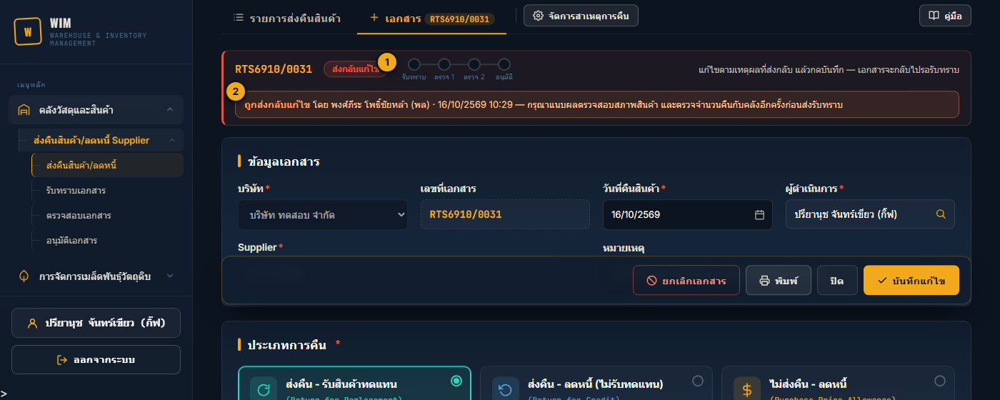
- 1สถานะ ส่งกลับแก้ไข: เอกสารไม่อยู่ในรายการรอรับทราบ ผู้รับทราบกดรับทราบไม่ได้จนกว่าผู้ทำเอกสารจะบันทึกใหม่
- 2เหตุผลที่ถูกส่งกลับ: บอกว่าใครส่งกลับ เมื่อไร และต้องแก้อะไร
- แก้ไขข้อมูลตามเหตุผลที่ส่งกลับ (ถ้าไม่ต้องแก้อะไร ก็บันทึกได้เลย)
- กด บันทึกแก้ไข ที่แถบด้านล่าง เอกสารจะกลับไปเป็น รอรับทราบ
- คัดลอกข้อความตามรับทราบส่งใน LINE อีกครั้ง (หัวข้อ 08) — ผู้รับทราบจะเห็นแถบ "แก้ไขแล้ว ส่งรับทราบใหม่" พร้อมเหตุผลเดิม
สำหรับผู้รับทราบ / ผู้ตรวจสอบ / ผู้อนุมัติ
เข้าได้ 2 ทาง: กดลิงก์ที่ได้รับทาง LINE (เปิดหน้าเอกสารใบนั้นทันที) หรือเปิดเมนู รับทราบเอกสาร / ตรวจสอบเอกสาร / อนุมัติเอกสาร ซึ่งแสดงเฉพาะเอกสารที่รอขั้นของคุณเท่านั้น
หน้ารายการรอดำเนินการ
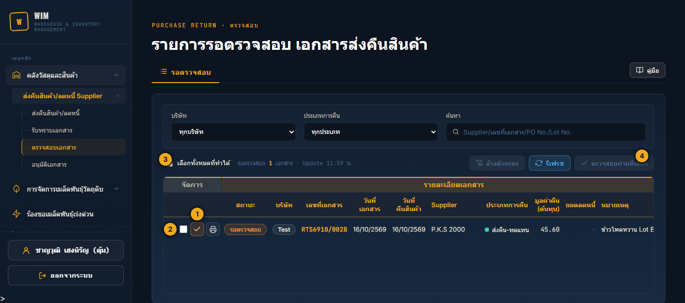
- 1ปุ่ม ✓ (สีตามขั้น: รับทราบ = ม่วง / ตรวจสอบ = ส้ม / อนุมัติ = เขียว): เปิดหน้าเอกสารเพื่อดูรายละเอียดก่อนกด
- 2ช่องเลือก: ติ๊กหลายใบเพื่อทำพร้อมกัน
- 3เลือกทั้งหมดที่ทำได้
- 4…ที่เลือก (เช่น ตรวจสอบผ่านที่เลือก): ทำทุกใบที่ติ๊ก ระบบทำทีละใบ ถ้าใบไหนทำไม่ได้ (เช่น มีคนทำไปก่อนแล้ว) จะแจ้งเฉพาะใบนั้น
หน้าเอกสาร
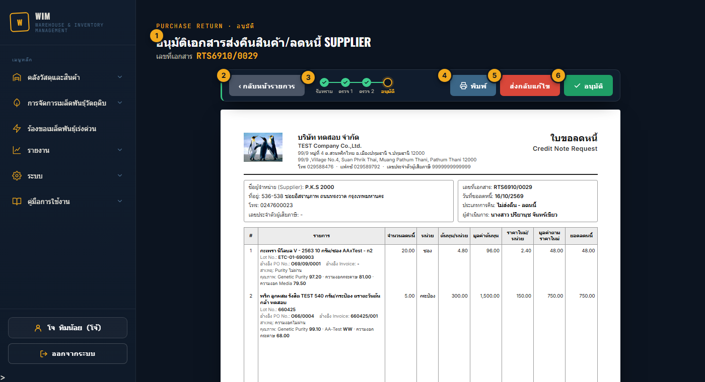
- 1หัวข้อ บอกขั้นที่คุณเข้ามาทำ (รับทราบ / ตรวจสอบ / อนุมัติ) และเลขที่เอกสาร
- 2กลับหน้ารายการ: กลับไปรายการรอ (ตัวกรองเดิมยังอยู่)
- 3ขั้นตอน: จุดเขียว = ผ่านแล้ว วงส้ม = ขั้นที่รออยู่ ชี้เมาส์ดูชื่อผู้กดและเวลา
- 4พิมพ์ ใบเอกสาร A4 — หัวข้อ 12
- 5ส่งกลับแก้ไข: ต้องระบุเหตุผล/สิ่งที่ต้องแก้ (มากกว่า 5 ตัวอักษร) เอกสารจะกลับไปที่ผู้ทำเอกสาร
- 6รับทราบ / ตรวจสอบผ่าน / อนุมัติ: ระบบถามยืนยันก่อน ตอนอนุมัติจะแสดงสิ่งที่ระบบจะทำ
- ปุ่มดำเนินการขึ้นเฉพาะเมื่อคุณมีสิทธิ์ขั้นนั้น และเอกสารยังรอขั้นที่คุณเข้ามา ถ้าไม่มีปุ่ม แถบด้านบนจะบอกเหตุผล เช่น "คุณตรวจสอบเอกสารนี้แล้ว — รอผู้ตรวจสอบอีกท่าน"
- กดผ่านแล้ว หน้านี้จะแสดงว่า "ขั้นรับทราบเสร็จแล้ว — ตอนนี้เอกสารรอตรวจสอบ" ปุ่มของขั้นถัดไปจะไม่ขึ้นในหน้านี้ ถ้าคุณมีสิทธิ์ขั้นถัดไปด้วย ให้เข้าจากเมนูหรือลิงก์ของขั้นนั้น
- หน้าเอกสารแก้ไขข้อมูลไม่ได้ ถ้าต้องแก้ให้ ส่งกลับแก้ไข
เมื่อรายการผ่านกระบวนการอนุมัติ
ใต้ใบเอกสาร (เอกสารที่รออนุมัติ / อนุมัติแล้ว) มีกล่องสรุปว่าเมื่ออนุมัติแล้วระบบจะทำอะไร การ์ดที่ไม่เกิดกับประเภทนี้จะเป็นสีจาง
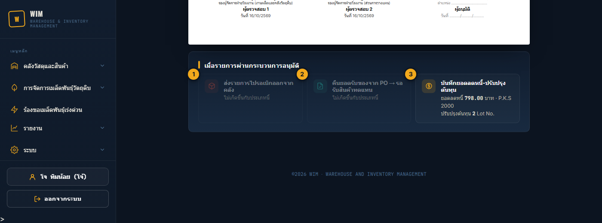
- 1ส่งรายการไปรอเบิกออกจากคลัง (ประเภทส่งคืนของ): ปลดล็อกรายการรอเบิก คลังเบิกสินค้าออกได้
- 2คืนยอดรับของจาก PO → รอรับสินค้าทดแทน (ส่งคืน-รับทดแทน): หักยอดรับของบรรทัด PO และรายการรอรับ (แปลงหน่วยให้) ถ้า PO เคยรับครบแล้ว จะกลับเป็น รับไม่ครบ เพื่อรอรับของทดแทน
- 3บันทึกยอดลดหนี้-ปรับปรุงต้นทุน (ประเภทที่มีลดหนี้): แสดงยอดลดหนี้ และจำนวน Lot ที่จะปรับต้นทุน
การปรับปรุงต้นทุน Lot
ตอนอนุมัติเอกสารที่มีลดหนี้ ระบบปรับ ต้นทุน/หน่วยของ Lot ให้อัตโนมัติ (ตามหลักต้นทุนเฉลี่ย) โดยดูจาก จำนวนของ Lot ที่ยังอยู่ในคลัง (รวมของที่จองเบิกไว้แต่คลังยังไม่ตัก ไม่รวมของที่เอกสารนี้ส่งคืน)
| กรณี | ต้นทุนใหม่ของ Lot | ตัวอย่าง (ต้นทุนเดิม 10 บาท ราคาใหม่ 4 บาท) |
|---|---|---|
| ลดหนี้ครอบคลุมของที่เหลือในคลังทั้งหมด หรือของหมดคลังแล้ว | = ราคาใหม่ | คงเหลือ 50 ลดหนี้ 50 → 4.00 |
| ลดหนี้แค่บางส่วน ยังมีของที่ไม่ได้ลดหนี้เหลืออยู่ | เฉลี่ย = (ต้นทุนเดิม × คงเหลือ − ยอดลดหนี้) ÷ คงเหลือ | คงเหลือ 100 ลดหนี้ 40 → (1,000 − 240) ÷ 100 = 7.60 |
| ส่งคืน-ลดหนี้ ราคาใหม่ = 0 (รับเงินคืนเต็มจำนวน) | ไม่เปลี่ยน | — |
| ติ๊ก "ลดหนี้เฉพาะส่วนที่ใช้ไปแล้ว" | ไม่เปลี่ยน | — |
- ของที่เบิก/ขายไปก่อนหน้า ไม่ถูกย้อนแก้มูลค่า (ใช้ไปแล้วคือใช้ไปเลย) ต้นทุนใหม่มีผลกับการเบิกครั้งถัดไป
- ทุกครั้งที่ปรับ ระบบเก็บประวัติ (ต้นทุนเดิม → ใหม่, เลขที่เอกสาร, ผู้อนุมัติ, เวลา) ในประวัติการแก้ไขต้นทุน แม้ต้นทุนไม่เปลี่ยนก็บันทึกว่ามีการลดหนี้
- ถ้าคำนวณแล้วผิดปกติ (ติดลบ หรือสูงกว่าต้นทุนเดิม) หรือ Lot เดียวกันใส่ราคาใหม่ไม่เท่ากัน ระบบจะไม่ให้อนุมัติ และแจ้งให้ตรวจข้อมูล
ใบเอกสารและการพิมพ์
หน้าเอกสารแสดงเป็นใบเอกสาร A4 เหมือนที่พิมพ์ออกมา กด พิมพ์ ในหน้าเอกสาร หรือไอคอนพิมพ์ในหน้ารายการ พิมพ์ได้ทุกสถานะ (ช่องลงนามที่ยังไม่มีคนกด จะเว้นว่างไว้ให้เซ็นมือ)
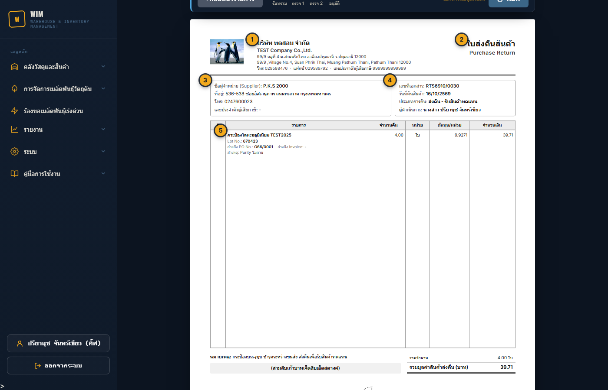
- 1หัวเอกสาร: โลโก้ ชื่อบริษัท (ไทย/อังกฤษ) ที่อยู่ โทร แฟกซ์ เลขประจำตัวผู้เสียภาษี
- 2ชื่อเอกสาร ตามประเภท: ใบส่งคืนสินค้า / ใบส่งคืนสินค้า/ใบขอลดหนี้ / ใบขอลดหนี้ (เอกสารหลายหน้า จะมี "หน้า 1 / 2" ใต้ชื่อเอกสาร)
- 3ข้อมูลผู้จำหน่าย: ชื่อ ที่อยู่ โทร เลขประจำตัวผู้เสียภาษีของ Supplier
- 4ข้อมูลเอกสาร: เลขที่เอกสาร วันที่คืนสินค้า ประเภทการคืน ผู้ดำเนินการ
- 5รายการ: ชื่อสินค้า Lot No. อ้างอิง PO / Invoice สาเหตุ และผลคุณภาพ (เฉพาะรายการที่มีผล)
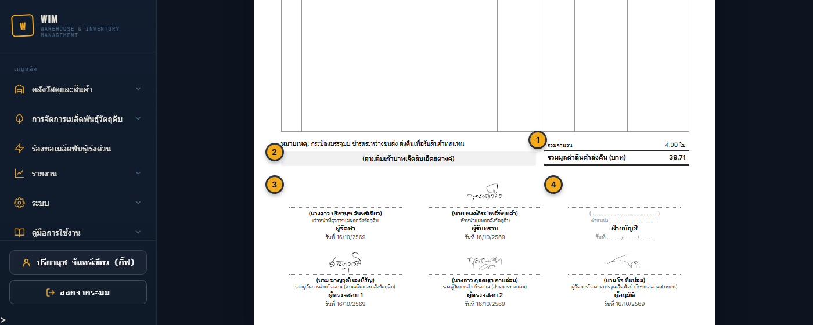
- 1ยอดรวม: ประเภทส่งคืน = รวมมูลค่าสินค้าส่งคืน / ประเภทลดหนี้ = รวมมูลค่าต้นทุน, มูลค่าตามราคาใหม่, ยอดขอลดหนี้สุทธิ
- 2จำนวนเงินเป็นตัวอักษร
- 3ช่องลงนาม: ผู้จัดทำ ผู้รับทราบ ผู้ตรวจสอบ 1-2 ผู้อนุมัติ — ขึ้นลายเซ็น (ถ้ามีรูปลายเซ็นในระบบ) ชื่อ-นามสกุล ตำแหน่ง และวันที่ เมื่อกดขั้นนั้นแล้ว
- 4ฝ่ายบัญชี: เว้นว่างไว้เซ็นบนกระดาษ (ไม่อยู่ในขั้นตอนของระบบ)
- ถ้ารายการเยอะเกิน 1 หน้า ระบบแบ่งหน้าให้ ทุกหน้ามีหัวเอกสาร หน้าที่ไม่ใช่หน้าสุดท้ายเขียน "มีต่อหน้าถัดไป" ยอดรวมและลายเซ็นอยู่หน้าสุดท้าย
- เอกสารที่ยกเลิกแล้ว ดูและพิมพ์ได้ แต่จะมีลายน้ำ "ยกเลิก" ทับ
ยกเลิกเอกสาร
ผู้มีสิทธิ์ยกเลิก กดไอคอน ⊘ ในหน้ารายการ แล้วระบุเหตุผล (มากกว่า 5 ตัวอักษร) เอกสารที่ยกเลิกแล้วกู้คืนไม่ได้ ถ้ายกเลิกผิดให้ทำเอกสารใหม่
| สถานะเอกสาร | ยกเลิกได้ไหม | ระบบทำอะไรให้ |
|---|---|---|
| ยังไม่อนุมัติ (ทุกประเภท) | ✔ ได้ | ยกเลิกรายการรอเบิก คืนยอดที่จองไว้ |
| อนุมัติแล้ว — ส่งคืน-รับทดแทน | ✔ ได้ ถ้าคลังยังไม่เบิกสินค้า | คืนยอดรับของ PO / รายการรอรับ (สถานะ PO กลับเป็นเดิม) และยกเลิกรายการรอเบิก |
| อนุมัติแล้ว — ส่งคืน-ลดหนี้ / ไม่ส่งคืน-ลดหนี้ | ✘ ไม่ได้ | ต้นทุน Lot ถูกปรับแล้ว ถ้าต้นทุนผิดให้ฝ่ายบัญชีแก้ไขต้นทุน |
| คลังเบิกสินค้าออกไปแล้ว | ✘ ไม่ได้ | ถ้าจำเป็น ให้คลังยกเลิกการเบิกก่อน แล้วจึงยกเลิกเอกสารได้ |
จัดการสาเหตุการคืน
ผู้มีสิทธิ์จัดการสาเหตุ จะเห็นปุ่ม ⚙ จัดการสาเหตุการคืน ข้างแท็บด้านบนของหน้ารายการ (และปุ่ม ＋ ที่หัวคอลัมน์สาเหตุในฟอร์ม)
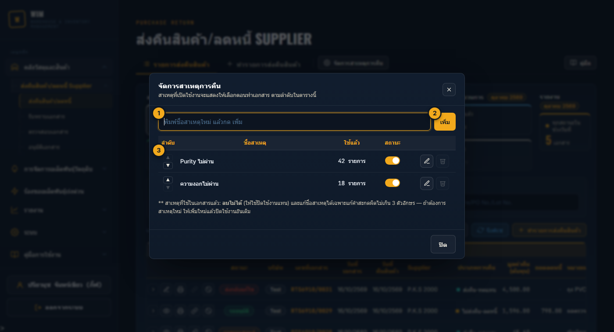
- 1ชื่อสาเหตุใหม่
- 2เพิ่ม
- 3แต่ละสาเหตุ: ▲▼ เรียงลำดับที่แสดงในฟอร์ม / จำนวนที่ใช้แล้ว / สวิตช์เปิด-ปิดใช้งาน / ✎ แก้ไขชื่อ / 🗑 ลบ
ความหมายของสถานะ
| สถานะ | ความหมาย | ใครต้องทำต่อ |
|---|---|---|
| ส่งกลับแก้ไข | ถูกส่งกลับจากขั้นรับทราบ / ตรวจสอบ / อนุมัติ พร้อมเหตุผล | ผู้ทำเอกสาร แก้ไขแล้วบันทึก |
| รอรับทราบ | บันทึกแล้ว ยังแก้ไขได้ | ผู้รับทราบ |
| รอตรวจสอบ 1 | รับทราบแล้ว รอผู้ตรวจสอบคนแรก | ผู้ตรวจสอบ |
| รอตรวจสอบ 2 | ตรวจสอบ 1 แล้ว รอผู้ตรวจสอบคนที่ 2 (คนละคนกับตรวจสอบ 1) | ผู้ตรวจสอบอีกท่าน |
| รออนุมัติ | ตรวจสอบครบ 2 คนแล้ว | ผู้อนุมัติ |
| อนุมัติแล้ว | ระบบทำงานตามประเภทการคืนแล้ว (รอเบิก / PO / ลดหนี้-ต้นทุน) | คลัง (ประเภทส่งคืนของ) |
| ยกเลิก | ยกเลิกแล้ว เก็บไว้เป็นประวัติ ดู/พิมพ์ได้ (มีลายน้ำ) | — |
ในหน้ารับทราบ / ตรวจสอบ / อนุมัติ สถานะรอตรวจสอบ 1 และ 2 จะแสดงรวมเป็น "รอตรวจสอบ"
คำถามที่พบบ่อยและการแก้ปัญหา
หาเอกสารที่ทำไว้เดือนก่อนไม่เจอ
ถ้ายังไม่จบกระบวนการ จะอยู่ในการ์ด "อยู่ระหว่างกระบวนการ" เสมอไม่ว่าทำวันไหน ถ้าอนุมัติแล้วหรือยกเลิกแล้ว ให้กดการ์ดในกลุ่ม "สิ้นสุดกระบวนการ" แล้วเลือกช่วงวันที่ให้ครอบคลุม
เลือก Supplier แล้วไม่มีรายการให้เลือก หรือหา Lot ไม่เจอ
รายการมาจาก PO ที่รับเข้าคลังแล้วของ Supplier นั้นในบริษัทที่เลือกเท่านั้น ประเภทส่งคืนของแสดงเฉพาะ Lot ที่ยังมีสต๊อก ถ้าต้องการลดหนี้ Lot ที่หมดแล้ว ให้เลือกประเภท "ไม่ส่งคืน - ลดหนี้" แล้วเปิดสวิตช์แสดงสินค้าที่หมดแล้วและพิมพ์ค้นหา
บันทึกไม่ได้ ขึ้นว่ายอดคงเหลือเปลี่ยน
ระหว่างที่กรอกเอกสาร มีการเบิก/คืน Lot นั้นไปแล้ว ระบบไฮไลต์รายการที่ยอดเปลี่ยน (ยอดเดิม → ยอดใหม่) ให้ตรวจจำนวนคืนแล้วกดบันทึกอีกครั้ง
แก้ไขเอกสารไม่ได้ (เปิดแล้วเป็นหน้าเอกสาร ดูอย่างเดียว)
เอกสารที่รับทราบแล้วแก้ไขไม่ได้ ให้ผู้รับทราบ / ผู้ตรวจสอบ / ผู้อนุมัติ กดส่งกลับแก้ไขก่อน แล้วจึงแก้ได้
เป็นผู้ตรวจสอบ แต่หาเอกสารในรายการรอตรวจสอบไม่เจอ
ถ้าคุณตรวจสอบเอกสารนั้นไปแล้ว (เป็นตรวจสอบ 1) เอกสารจะไม่แสดงในรายการของคุณอีก เพราะต้องรอผู้ตรวจสอบคนอื่น ตรวจดูความคืบหน้าได้ที่หน้ารายการหลักหรือลิงก์เอกสาร
กดลิงก์จาก LINE แล้วไม่มีปุ่มให้กด
แถบด้านบนของหน้าเอกสารจะบอกเหตุผล เช่น ไม่มีสิทธิ์ขั้นนั้น / ขั้นนั้นมีคนทำไปแล้ว (เอกสารไปอยู่ขั้นถัดไป) / ถูกส่งกลับแก้ไข ถ้าเป็นลิงก์เก่า ให้ขอข้อความใหม่จากผู้ทำเอกสาร
อนุมัติไม่ได้ ขึ้นว่าแปลงหน่วยไม่ได้
ประเภทส่งคืน-รับทดแทนต้องแปลงหน่วยของ Lot เป็นหน่วยของ PO เพื่อหักยอดรับ ถ้าสินค้ายังไม่ได้ตั้งค่าหน่วยรอง ให้แจ้งผู้ดูแลระบบตั้งค่าหน่วยของสินค้าก่อน แล้วจึงอนุมัติใหม่
ยกเลิกเอกสารไม่ได้
ดูเงื่อนไขใน หัวข้อ 13 — คลังเบิกสินค้าไปแล้ว หรือเป็นเอกสารลดหนี้ที่อนุมัติแล้ว จะยกเลิกไม่ได้ ถ้าไม่เห็นปุ่มยกเลิกเลย แปลว่ายังไม่มีสิทธิ์ยกเลิกเอกสาร
ขึ้นข้อความ "ไม่มีสิทธิ์เข้าถึงหน้านี้" หรือเมนูมีรูปกุญแจ 🔒
บัญชียังไม่ได้รับสิทธิ์เมนูที่ต้องการ หรือสิทธิ์บริษัท กรุณาติดต่อผู้ดูแลระบบ (เมนู ระบบ › กำหนดสิทธิ์การใช้งาน)